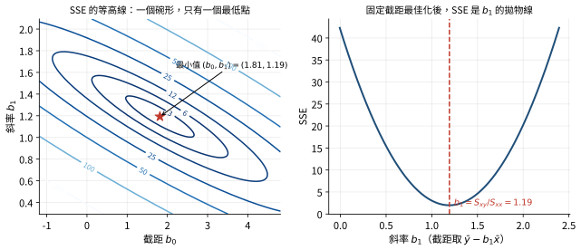
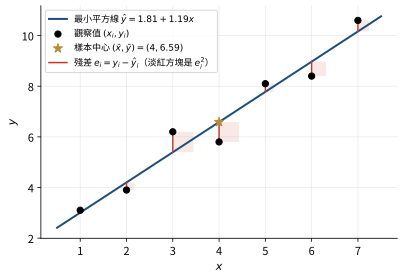
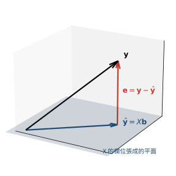
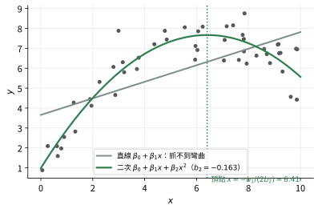
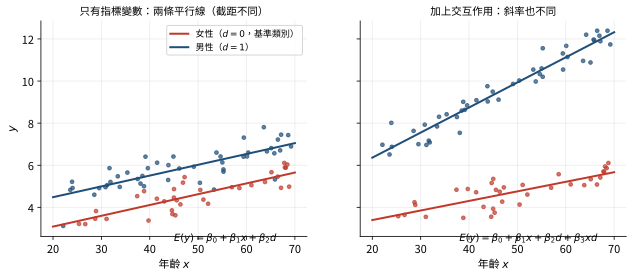
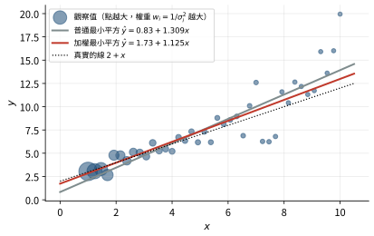
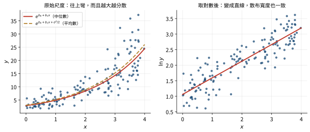
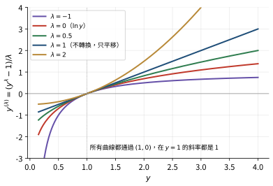

2.1 模型與假設、簡單線性迴歸 一、線性迴歸模型
有 \(n\) 筆觀察值（observation）。第 \(i\) 筆包含一個反應值 （response）\(y_i\)，以及 \(k\) 個解釋變數 （explanatory variable）的值 \(x_{i1},\ldots,x_{ik}\)。例如 \(y_i\) 是第 \(i\) 張保單的理賠金額，\(x_{i1}\) 是被保險人年齡、\(x_{i2}\) 是車價。線性迴歸模型 （linear regression model）假設
\[y_i=\beta_0+\beta_1x_{i1}+\beta_2x_{i2}+\cdots+\beta_kx_{ik}+\varepsilon_i,\qquad i=1,\ldots,n.\]
\(\beta_0\) 是截距 （intercept）：所有 \(x\) 都是 0 時 \(y\) 的平均。
\(\beta_1,\ldots,\beta_k\) 是斜率 （slope），又稱迴歸係數 （regression coefficient）：\(\beta_j\) 是其他變數不變時，\(x_j\) 增加 1 單位，\(y\) 的平均增加多少。
\(\varepsilon_i\) 是誤差項 （error term）：\(y_i\) 裡模型解釋不了的部分。
\(\beta_0,\ldots,\beta_k\) 是母體的真實參數 （parameter），我們不知道，只能用資料估計。用資料算出的估計值記為 \(b_0,b_1,\ldots,b_k\)（向量寫成 \(\mathbf b\)），配適值記為 \(\hat y_i\)。除了 \(k\) 個斜率還有截距，所以一共要估計 \(k+1\) 個參數 。這個 \(k+1\) 會在後面每一章的自由度裡出現（例如 \(n-k-1\)）。
「線性」指的是對參數線性 ，不是對 \(x\) 線性。判斷方法：把每個 \(\beta_j\) 看成未知數，模型是不是「未知數乘上已知的數，再加起來」。
\(y=\beta_0+\beta_1x+\beta_2x^2+\varepsilon\) 是線性迴歸：\(x\)、\(x^2\) 都是已知的數，\(\beta\) 只是乘在它們前面。
\(y=\beta_0e^{\beta_1x}+\varepsilon\) 不是：\(\beta_1\) 在指數裡面。
對參數線性很重要，因為這樣最小平方的解才有封閉公式（下面推導），不必用數值方法慢慢找。
二、誤差項的假設
把 \(\varepsilon_i\) 當成隨機變數，標準假設是：
平均為 0、變異數相同 ：\(E(\varepsilon_i)=0\)，\(\mathrm{Var}(\varepsilon_i)=\sigma^2\) 對所有 \(i\) 都相同。變異數相同叫同質變異 （homoscedasticity），不同叫異質變異 （heteroscedasticity）。獨立 （independent）：\(\varepsilon_1,\ldots,\varepsilon_n\) 彼此獨立，一筆的誤差不影響另一筆。常態 （normal）：\(\varepsilon_i\) 服從常態分配。
合起來寫成 \(\varepsilon_i\stackrel{\text{iid}}{\sim}N(0,\sigma^2)\)（iid＝independent and identically distributed，獨立且同分配）。解釋變數 \(x\) 被當成已知、固定的數，對它的分配沒有任何假設。
在這些假設下，給定一組解釋變數值，\(y\) 服從平均 \(\beta_0+\sum_j\beta_jx_j\)、變異數 \(\sigma^2\) 的常態分配。每個假設的用途不同：只要第 1 點的平均為 0，最小平方估計就不偏；變異數相同與獨立讓第 3 章 的標準誤公式成立；常態讓 \(t\) 檢定與 \(F\) 檢定的分配是精確的。第 5 章 會教怎麼用殘差檢查它們。
三、最小平方法
對任何一組候選的係數 \(b_0,b_1,\ldots,b_k\)，第 \(i\) 筆的殘差 （residual）是觀察值減去這組係數給的預測：\(y_i-(b_0+b_1x_{i1}+\cdots+b_kx_{ik})\)。把所有殘差平方再加總，得到殘差平方和 （residual sum of squares，SSE 或 RSS）：
\[\mathrm{SSE}(b_0,\ldots,b_k)=\sum_{i=1}^n\big(y_i-b_0-b_1x_{i1}-\cdots-b_kx_{ik}\big)^2 .\]
普通最小平方法 （ordinary least squares，OLS）選讓 SSE 最小的那組係數。為什麼用平方？
有正有負的殘差直接相加會互相抵銷，平方後都是正的。
平方是可以微分的光滑函數，令導數為 0 就能解出封閉公式；絕對值在 0 不能微分，比較難算。
在常態誤差下，最小平方估計正好就是最大概似估計 （maximum likelihood estimate，MLE），也就是「讓觀察到的資料出現機率最大」的估計。下面完整推導這一點。
推導：常態誤差下，最小平方估計＝最大概似估計
想法。 最大概似法的問題是：參數是多少時，我們手上這組 \(y_1,\ldots,y_n\) 最有可能出現？把「出現的可能性」寫成參數的函數（概似函數 ，likelihood function），再找讓它最大的參數。
第一步：一筆觀察的機率密度。 模型說 \(y_i\sim N(\mu_i,\sigma^2)\)，其中 \(\mu_i=\beta_0+\beta_1x_{i1}+\cdots+\beta_kx_{ik}\) 是第 \(i\) 筆的平均。常態的密度函數是
\[f(y_i)=\frac{1}{\sqrt{2\pi\sigma^2}}\exp\!\left(-\frac{(y_i-\mu_i)^2}{2\sigma^2}\right).\]
\(y_i\) 離平均 \(\mu_i\) 越遠，指數裡的負數越大，密度越小。
第二步：全部觀察的概似。 \(y_i\) 彼此獨立，聯合密度是各自密度的乘積：
\[L(\boldsymbol\beta,\sigma^2)=\prod_{i=1}^nf(y_i)=\prod_{i=1}^n\frac{1}{\sqrt{2\pi\sigma^2}}\exp\!\left(-\frac{(y_i-\mu_i)^2}{2\sigma^2}\right).\]
把資料當成已知、參數當成變數來看，這就是概似函數。
第三步：取對數。 \(\ln\) 是遞增函數，讓 \(L\) 最大的參數也讓 \(\ln L\) 最大；而對數把乘積變成加總，比較好處理。先算一項：利用 \(\ln(ab)=\ln a+\ln b\) 與 \(\ln e^z=z\)，
\[\ln f(y_i)=\ln\frac{1}{\sqrt{2\pi\sigma^2}}+\left(-\frac{(y_i-\mu_i)^2}{2\sigma^2}\right)=-\frac12\ln(2\pi\sigma^2)-\frac{(y_i-\mu_i)^2}{2\sigma^2}.\]
（\(\ln\frac1{\sqrt a}=-\frac12\ln a\)。）把 \(n\) 項加起來，第一項加了 \(n\) 次：
\[\ell(\boldsymbol\beta,\sigma^2)=\ln L=-\frac n2\ln(2\pi\sigma^2)-\frac{1}{2\sigma^2}\sum_{i=1}^n(y_i-\mu_i)^2 .\]
第四步：只看 \(\boldsymbol\beta\)。 觀察 \(\ell\) 的兩項：
第一項 \(-\frac n2\ln(2\pi\sigma^2)\) 裡沒有 \(\boldsymbol\beta\)。
第二項是 \(-\dfrac{1}{2\sigma^2}\times\sum(y_i-\mu_i)^2\)。\(\sum(y_i-\mu_i)^2\) 就是用 \(\boldsymbol\beta\) 當係數時的 SSE；前面乘的 \(\frac{1}{2\sigma^2}\) 是正數，再加一個負號。
所以不論 \(\sigma^2\) 是多少，\(\ell=(\text{和 }\boldsymbol\beta\text{ 無關的數})-(\text{正數})\times\text{SSE}(\boldsymbol\beta)\)。SSE 越小，\(\ell\) 越大。讓 \(\ell\) 最大的 \(\boldsymbol\beta\)，就是讓 SSE 最小的 \(\boldsymbol\beta\) ，也就是最小平方估計 \(\mathbf b\)。
第五步：順便求 \(\sigma^2\)。 把 \(\boldsymbol\beta=\mathbf b\) 代回，\(\ell\) 只剩 \(\sigma^2\) 一個未知數，記 \(\theta=\sigma^2\)：
\[\ell(\theta)=-\frac n2\ln(2\pi)-\frac n2\ln\theta-\frac{\text{SSE}}{2\theta},\qquad\frac{d\ell}{d\theta}=-\frac{n}{2\theta}+\frac{\text{SSE}}{2\theta^2}=0\ \Rightarrow\ \hat\theta=\frac{\text{SSE}}{n}.\]
所以 \(\sigma^2\) 的最大概似估計是 \(\text{SSE}/n\)。第 3 章 會看到，實務上改用 \(s^2=\text{SSE}/(n-k-1)\)，因為除以 \(n\) 會低估 \(\sigma^2\)（平均起來偏小）。
四、簡單線性迴歸的公式
只有一個解釋變數（\(k=1\)）時叫簡單線性迴歸 （simple linear regression），也叫基本線性迴歸或兩變數迴歸。模型是 \(y_i=\beta_0+\beta_1x_i+\varepsilon_i\)。
先定義三個中心化平方和 （centered sums of squares），之後每一章都會用到。「中心化」是先減掉平均：
\[S_{xx}=\sum_{i=1}^n(x_i-\bar x)^2,\qquad S_{yy}=\sum_{i=1}^n(y_i-\bar y)^2,\qquad S_{xy}=\sum_{i=1}^n(x_i-\bar x)(y_i-\bar y).\]
\(S_{xx}\) 量 \(x\) 有多分散；\(S_{xy}\) 為正表示 \(x\) 大於平均時 \(y\) 也傾向大於平均。
推導：簡單線性迴歸的最小平方估計
目標是找讓 \(Q(b_0,b_1)=\sum_i(y_i-b_0-b_1x_i)^2\) 最小的 \(b_0,b_1\)。
為什麼令偏導數為 0。 \(Q\) 是光滑的碗形函數（右圖）。在碗底，往任何方向走都不會再下降，所以對 \(b_0\) 與 \(b_1\) 的偏導數（partial derivative）都必須是 0。
對 \(b_0\) 偏微分。 對每一項用連鎖律（chain rule）：\(\dfrac{\partial}{\partial b_0}(y_i-b_0-b_1x_i)^2=2(y_i-b_0-b_1x_i)\cdot(-1)\)，因為括號裡 \(b_0\) 前面的係數是 \(-1\)。加總並令為 0：
\[\frac{\partial Q}{\partial b_0}=-2\sum_i(y_i-b_0-b_1x_i)=0 .\]
兩邊除以 \(-2\)，再把加總拆開：\(\sum_iy_i-nb_0-b_1\sum_ix_i=0\)（\(b_0\) 加了 \(n\) 次）。除以 \(n\) 得 \(\bar y-b_0-b_1\bar x=0\)，也就是
\[b_0=\bar y-b_1\bar x .\]
對 \(b_1\) 偏微分。 同理，括號裡 \(b_1\) 前面的係數是 \(-x_i\)：
\[\frac{\partial Q}{\partial b_1}=-2\sum_ix_i(y_i-b_0-b_1x_i)=0 .\]
把上一步的 \(b_0=\bar y-b_1\bar x\) 代入，括號變成 \(y_i-\bar y+b_1\bar x-b_1x_i=(y_i-\bar y)-b_1(x_i-\bar x)\)：
\[\sum_ix_i\big[(y_i-\bar y)-b_1(x_i-\bar x)\big]=0 .\]
換成中心化的形式。 因為 \(\sum_i(y_i-\bar y)=0\)、\(\sum_i(x_i-\bar x)=0\)，把前面的 \(x_i\) 換成 \(x_i-\bar x\) 不改變總和：多出來的部分是 \(\bar x\sum_i[(y_i-\bar y)-b_1(x_i-\bar x)]=\bar x(0-0)=0\)。於是
\[\sum_i(x_i-\bar x)(y_i-\bar y)-b_1\sum_i(x_i-\bar x)^2=0\ \Rightarrow\ b_1=\frac{S_{xy}}{S_{xx}} .\]
確認是最小值。 二階偏導數 \(\dfrac{\partial^2Q}{\partial b_1^2}=2\sum x_i^2>0\)，而且由二階偏導數組成的海森矩陣 （Hessian）的行列式 \(4\big(n\sum x_i^2-(\sum x_i)^2\big)=4nS_{xx}>0\)（只要 \(x\) 不全相同），這表示 \(Q\) 是往上開口的碗，所以找到的是唯一的最小值。
結論：
\[\boxed{b_1=\frac{S_{xy}}{S_{xx}}=\frac{\sum(x_i-\bar x)(y_i-\bar y)}{\sum(x_i-\bar x)^2},\qquad b_0=\bar y-b_1\bar x}\]

左：七筆資料的 SSE 對 \((b_0,b_1)\) 的等高線，是一個碗形，最低點（紅星）就是最小平方估計。右：把截距固定為 \(\bar y-b_1\bar x\) 之後，SSE 只是 \(b_1\) 的拋物線，頂點在 \(S_{xy}/S_{xx}\)。 
最小平方線與殘差。紅色線段是每一筆的殘差，淡紅方塊的面積是殘差平方；最小平方線讓這些方塊的總面積最小。直線一定通過樣本中心（金色星號）。 五、斜率的其他寫法
用樣本共變異數與樣本變異數。 樣本共變異數 （sample covariance）\(\mathrm{cv}_{xy}=S_{xy}/(n-1)\)，樣本變異數 （sample variance）\(s_x^2=S_{xx}/(n-1)\)。兩者相除，\(n-1\) 消掉：
\[b_1=\frac{\mathrm{cv}_{xy}}{s_x^2}.\]
因為分母會消掉，用除以 \(n\) 的版本也可以。
用原始和計算（考題最常給的形式）。 題目常給 \(\sum x_i\)、\(\sum x_i^2\)、\(\sum x_iy_i\) 這種沒有減平均的和。把 \(S_{xy}\) 的乘積展開：
\[S_{xy}=\sum(x_iy_i-x_i\bar y-\bar xy_i+\bar x\bar y)=\sum x_iy_i-\bar y\sum x_i-\bar x\sum y_i+n\bar x\bar y .\]
因為 \(\sum x_i=n\bar x\)、\(\sum y_i=n\bar y\)，中間兩項都是 \(n\bar x\bar y\)：
\[S_{xy}=\sum x_iy_i-n\bar x\bar y-n\bar x\bar y+n\bar x\bar y=\sum x_iy_i-n\bar x\bar y=\sum x_iy_i-\frac{(\sum x_i)(\sum y_i)}{n}.\]
同理（把 \(y\) 換成 \(x\)）：
\[S_{xx}=\sum x_i^2-n\bar x^2=\sum x_i^2-\frac{(\sum x_i)^2}{n}.\]
所以
\[b_1=\frac{\sum x_iy_i-n\bar x\bar y}{\sum x_i^2-n\bar x^2}.\]
用相關係數。 樣本相關係數 （sample correlation coefficient）\(r_{xy}=\dfrac{\mathrm{cv}_{xy}}{s_xs_y}=\dfrac{S_{xy}}{\sqrt{S_{xx}S_{yy}}}\)，所以 \(\mathrm{cv}_{xy}=r_{xy}s_xs_y\)。代進上面的式子：
\[b_1=\frac{r_{xy}s_xs_y}{s_x^2}=r_{xy}\frac{s_y}{s_x}.\]
斜率和相關係數同號；相關係數沒有單位，乘上 \(s_y/s_x\) 才有「\(y\) 的單位／\(x\) 的單位」。
易錯提醒
用 \(r\,s_y/s_x\) 時，迴歸的方向決定誰在分子：\(y\) 對 \(x\) 迴歸，\(s_y\) 在分子。
原始和的公式分母是 \(\sum x_i^2-n\bar x^2\)，不是 \(\sum x_i^2-\bar x^2\)（習題 2.15 就是考這個）。
題目給的 \(\sum y_i^2\) 算斜率用不到，是拿來算後面章節的 \(S_{yy}\) 或 \(R^2\) 的。
例題 2-1
資料 \(x=1,2,3,4,5\)，\(y=2,4,5,4,5\)。求 \(b_0,b_1\)。
\(\bar x=3\)、\(\bar y=4\)。\(\sum x_i^2=55\)、\(\sum x_iy_i=66\)。
\(S_{xx}=55-5(3^2)=10\)，\(S_{xy}=66-5(3)(4)=6\)。
\(b_1=6/10=0.6\)，\(b_0=4-0.6(3)=2.2\)。迴歸線 \(\hat y=2.2+0.6x\)。
例題 2-2
新產品前四個月營收（百萬）為 27、34、48、59，以月份 \(x=1,2,3,4\) 迴歸。
\(\bar x=2.5\)、\(\bar y=42\)。\(S_{xx}=(-1.5)^2+(-0.5)^2+0.5^2+1.5^2=5\)。
\(S_{xy}=(-1.5)(-15)+(-0.5)(-8)+(0.5)(6)+(1.5)(17)=22.5+4+3+25.5=55\)。
\(b_1=55/5=11\)，\(b_0=42-11(2.5)=14.5\)。每多一個月，營收平均多 1,100 萬。
例題 2-3：換單位的技巧
四輛車的里程（千英里）7、10、11、12，總理賠成本（千元）0.6、2、1、1.6。預測里程 5,000 英里的理賠。
先把「千」去掉計算：\(\bar x=10\)、\(\bar y=1.3\)；\(\sum x^2=414\)，\(S_{xx}=414-4(100)=14\)；\(\sum xy=54.4\)，\(S_{xy}=54.4-4(10)(1.3)=2.4\)。
\(b_1=2.4/14=0.171429\)（千元／千英里，也就是元／英里）。
\(b_0=1.3-0.171429(10)=-0.414286\)（千元）\(=-414.29\) 元。
預測：\(-414.29+0.171429\times5000=442.86\) 元。注意 \(x=5\) 已經在資料範圍（7～12）之外，這是外插 （extrapolation），結果不太可靠。
六、配適值、殘差與它們的性質
配適值 （fitted value）\(\hat y_i=b_0+\sum_jb_jx_{ij}\)；殘差 （residual）\(e_i=y_i-\hat y_i\)。殘差看得到；誤差 \(\varepsilon_i=y_i-E(y_i)\) 看不到，因為真正的 \(\beta\) 不知道。殘差是誤差的估計。
上面兩個偏導數等於 0 的式子叫正規方程式 （normal equations），把 \(b_0,b_1\) 代回去，括號 \(y_i-b_0-b_1x_i\) 正好就是殘差 \(e_i\)，所以它們可以改寫成：
由 \(\dfrac{\partial Q}{\partial b_0}=0\)：\(\sum_ie_i=0\)，殘差總和為 0。這個條件來自對截距微分，所以模型必須有截距 才成立。
由 \(\dfrac{\partial Q}{\partial b_1}=0\)：\(\sum_ix_ie_i=0\)。再加上第 1 點，\(\sum(x_i-\bar x)e_i=0\)，也就是殘差和解釋變數的樣本相關為 0。
由 \(b_0=\bar y-b_1\bar x\)：迴歸線通過 \((\bar x,\bar y)\)。
由第 1 點：\(\sum\hat y_i=\sum(y_i-e_i)=\sum y_i\)，配適值的平均等於 \(\bar y\)。
這一節的精選習題
You are given the linear regression model \(y_i=\beta_0+\beta_1x_i+\varepsilon_i\) to fit to the following data:
\(x\)
\(-2\)
\(-1\)
0
1
2
\(y\)
3
5
8
9
10
Determine the least squares estimate of \(\beta_0\).
隱藏解答 中文題意
以模型 \(y_i=\beta_0+\beta_1x_i+\varepsilon_i\) 配適下列資料，求 \(\beta_0\) 的最小平方估計。
（數據、圖表與選項見上方英文題目。）
解析
截距公式 \(b_0=\bar y-b_1\bar x\)。
\(\bar x=(-2-1+0+1+2)/5=0\)。
\(\bar y=(3+5+8+9+10)/5=35/5=7\)。
因為 \(\bar x=0\)，\(b_1\bar x=0\)，不論斜率多少，\(b_0=\bar y=7\)。
（若要斜率：\(S_{xx}=4+1+0+1+4=10\)，\(S_{xy}=(-2)(-4)+(-1)(-2)+0+1(2)+2(3)=18\)，\(b_1=1.8\)。）
易錯
\(x\) 已經中心化（平均為 0）時，截距就是 \(\bar y\)。這是考題常用的捷徑。
You are fitting a linear regression model \(y_i=\beta_0+\beta_1x_i+\varepsilon_i\) to 18 observations. You are given the following:
(i) \(\sum_{i=1}^{18}x_i=216\)
(ii) \(\sum_{i=1}^{18}x_i^2=3092\)
(iii) \(\sum_{i=1}^{18}y_i=252\)
(iv) \(\sum_{i=1}^{18}y_i^2=4528\)
(v) \(\sum_{i=1}^{18}x_iy_i=3364\)
Determine the least squares estimate of \(\beta_1\).
隱藏解答 中文題意
以 \(y_i=\beta_0+\beta_1x_i+\varepsilon_i\) 配適 18 筆觀察值。已知 \(\sum x_i=216\)、\(\sum x_i^2=3092\)、\(\sum y_i=252\)、\(\sum y_i^2=4528\)、\(\sum x_iy_i=3364\)。求 \(\beta_1\) 的最小平方估計。
解析
第一步：中心化平方和。
\[S_{xx}=\sum x_i^2-\frac{(\sum x_i)^2}{n}=3092-\frac{216^2}{18}=3092-2592=500 .\]
第二步：中心化交叉乘積和。
\[S_{xy}=\sum x_iy_i-\frac{(\sum x_i)(\sum y_i)}{n}=3364-\frac{216\times252}{18}=3364-3024=340 .\]
第三步： \(b_1=S_{xy}/S_{xx}=340/500=0.68\)。
易錯
\(\sum y_i^2\) 用不到。不能直接拿 \(\sum x_iy_i/\sum x_i^2\) 當斜率，那是「沒有截距」的迴歸斜率。
[SRM Sample Question #23] Toby observes the following coffee prices in his company cafeteria:
12 ounces for 1.00
16 ounces for 1.20
20 ounces for 1.40
The cafeteria announces that they will begin to sell any amount of coffee for a price that is the value predicted by a simple linear regression using least squares of the current prices on size.
Toby and his co-worker Karen want to determine how much they would save each day, using the new pricing, if, instead of each buying a 24-ounce coffee, they bought a 48-ounce coffee and shared it.
Calculate the amount they would save.
(A) It would cost them 0.40 more.
(B) It would cost the same.
(C) They would save 0.40.
(D) They would save 0.80.
(E) They would save 1.20.
隱藏解答 中文題意
（SRM 樣題 #23）員工餐廳的咖啡價格：12 盎司 1.00、16 盎司 1.20、20 盎司 1.40。餐廳宣布任何容量的價格都改成「以最小平方法將現有價格對容量做簡單線性迴歸」的預測值。Toby 和 Karen 原本各買一杯 24 盎司，若改成合買一杯 48 盎司再分著喝，每天能省多少？
(A) 多花 0.40 (B) 一樣 (C) 省 0.40 (D) 省 0.80 (E) 省 1.20
解析
第一步：求迴歸線。 三點 \((12,1.00),(16,1.20),(20,1.40)\) 剛好在一條直線上：每多 4 盎司貴 0.20，斜率 \(0.20/4=0.05\)。截距由 \(1.00=\beta_0+0.05(12)\) 得 \(\beta_0=0.40\)。點都在線上時，最小平方線就是那條線（SSE＝0 已是最小）。
用公式驗算：\(\bar x=16\)、\(\bar y=1.2\)，\(S_{xx}=16+0+16=32\)，\(S_{xy}=(-4)(-0.2)+0+4(0.2)=1.6\)，\(b_1=1.6/32=0.05\)，\(b_0=1.2-0.05(16)=0.40\)。
第二步：比較兩種買法。
- 各買 24 盎司：\(2\times(0.40+0.05\times24)=2\times1.60=3.20\)。
- 合買 48 盎司：\(0.40+0.05\times48=2.80\)。
省 \(3.20-2.80=0.40\)，正好是一個截距：多買一杯就多付一次固定的 0.40。
[MAS-I-F18:29] An ordinary least squares model with one variable (Advertising) and an intercept was fit to the following observed data in order to estimate Sales:
Observation
Advertising
Sales
1
5.5
100
2
5.8
110
3
6.0
112
4
5.9
115
5
6.2
117
Calculate the residual for the third observation.
(A) Less than \(-2\)
(B) At least \(-2\), but less than 0
(C) At least 0, but less than 2
(D) At least 2, but less than 4
(E) At least 4
隱藏解答 中文題意
（MAS-I 2018 秋 #29）以一個變數（廣告費）加截距的普通最小平方模型估計銷售額，資料如下。求第三筆觀察的殘差。
（數據、圖表與選項見上方英文題目。）
解析
第一步：平均數。 \(\sum x=29.4\)，\(\bar x=5.88\)；\(\sum y=554\)，\(\bar y=110.8\)。
第二步：\(S_{xx}\) 與 \(S_{xy}\)。 離差 \(x_i-\bar x\)：\(-0.38,-0.08,0.12,0.02,0.32\)；\(y_i-\bar y\)：\(-10.8,-0.8,1.2,4.2,6.2\)。
\[S_{xx}=0.1444+0.0064+0.0144+0.0004+0.1024=0.268,\]
\[S_{xy}=4.104+0.064+0.144+0.084+1.984=6.38 .\]
第三步：係數。 \(b_1=6.38/0.268=23.806\)；\(b_0=110.8-23.806\times5.88=-29.179\)。
第四步：第三筆的配適值與殘差。 \(\hat y_3=-29.179+23.806\times6.0=113.657\)，\(e_3=112-113.657=-1.657\)，落在 \([-2,0)\)。
You are fitting the linear regression model \(y_i=\beta_0+\beta_1x_i+\varepsilon_i\). You are given:
(i) \(\sum_{i=1}^{28}x_i=392\)
(ii) \(\sum_{i=1}^{28}y_i=924\)
(iii) \(\sum_{i=1}^{28}x_iy_i=13{,}272\)
(iv) \(\hat\beta_0=-23\)
Determine \(\sum_{i=1}^{28}x_i^2\).
隱藏解答 中文題意
配適 \(y_i=\beta_0+\beta_1x_i+\varepsilon_i\)，共 28 筆。已知 \(\sum x_i=392\)、\(\sum y_i=924\)、\(\sum x_iy_i=13{,}272\)、\(b_0=-23\)。求 \(\sum x_i^2\)。
解析
這題是反過來用公式。
第一步：平均數。 \(\bar x=392/28=14\)，\(\bar y=924/28=33\)。
第二步：由截距反推斜率。 \(b_0=\bar y-b_1\bar x\)，所以 \(-23=33-14b_1\)，\(b_1=56/14=4\)。
第三步：\(S_{xy}\)。 \(S_{xy}=\sum x_iy_i-n\bar x\bar y=13{,}272-28(14)(33)=13{,}272-12{,}936=336\)。
第四步：由斜率反推 \(S_{xx}\)。 \(b_1=S_{xy}/S_{xx}\)，\(S_{xx}=336/4=84\)。
第五步：回到原始平方和。 \(S_{xx}=\sum x_i^2-n\bar x^2\)，\(\sum x_i^2=84+28(14^2)=84+5{,}488=5{,}572\)。
In a simple regression model \(y_i=\beta_0+\beta_1x_i+\varepsilon_i\), you are given
\[\sum x_i=30\qquad\sum y_i=450\qquad\sum x_i^2=270\]
\[\sum x_iy_i=8100\qquad n=15\qquad x_5=3\qquad y_5=40\]
Calculate the fifth residual, \(\hat\varepsilon_5\).
隱藏解答 中文題意
簡單迴歸 \(y_i=\beta_0+\beta_1x_i+\varepsilon_i\)，\(n=15\)，\(\sum x_i=30\)、\(\sum y_i=450\)、\(\sum x_i^2=270\)、\(\sum x_iy_i=8100\)。第五筆 \(x_5=3\)、\(y_5=40\)。求第五個殘差 \(\hat\varepsilon_5\)。
答案
\(\hat\varepsilon_5=-24.29\)
解析
第一步： \(\bar x=2\)，\(\bar y=30\)。
\[S_{xx}=270-\frac{30^2}{15}=270-60=210,\]
\[S_{xy}=8100-\frac{30\times450}{15}=8100-900=7200 .\]
第二步： \(b_1=7200/210=34.2857\)。
第三步： \(\hat y_5=\bar y+b_1(x_5-\bar x)=30+34.2857\times(3-2)=64.2857\)。
第四步： \(\hat\varepsilon_5=y_5-\hat y_5=40-64.2857=-24.29\)。
觀念題（5 題，仿 SOA 樣題的質性題，含跨章節）
For the linear regression model \(y_i=\beta_0+\beta_1x_i+\varepsilon_i\), determine which of the following are standard assumptions.
I. The errors \(\varepsilon_i\) have mean 0.
II. The errors \(\varepsilon_i\) have constant variance \(\sigma^2\).
III. The explanatory variable \(x\) is normally distributed.
(A) III only
(B) I and II only
(C) I and III only
(D) II and III only
(E) The correct answer is not given by (A), (B), (C), or (D).
隱藏解答 中文題意
下列哪些是線性迴歸 \(y_i=\beta_0+\beta_1x_i+\varepsilon_i\) 的標準假設？
I. 誤差平均為 0。
II. 誤差變異數固定為 \(\sigma^2\)。
III. 解釋變數 \(x\) 服從常態分配。
解析
I、II 對（另外還有誤差彼此獨立；做推論時再加上常態）。
III 錯：\(x\) 被視為固定、非隨機的數，對它的分配沒有任何假設。要常態的是誤差 ，不是解釋變數。
For a least squares regression with an intercept, determine which of the following statements is/are true.
I. The residuals sum to zero.
II. The fitted regression line passes through \((\bar x,\bar y)\).
III. \(\sum_ix_ie_i=0\), where \(e_i\) is the \(i\)th residual.
(A) I and II only
(B) I and III only
(C) II and III only
(D) I, II, and III
(E) The correct answer is not given by (A), (B), (C), or (D).
隱藏解答 中文題意
有截距的最小平方迴歸，下列哪些正確？
I. 殘差和為 0。
II. 迴歸線通過 \((\bar x,\bar y)\)。
III. \(\sum_ix_ie_i=0\)。
解析
三個都是正規方程式的直接結果：對 \(b_0\) 偏微分得 \(\sum e_i=0\)（I），除以 \(n\) 得 \(\bar y=b_0+b_1\bar x\)（II）；對 \(b_1\) 偏微分得 \(\sum x_ie_i=0\)（III）。（第 2 章 2.1 節 ）
觀念 觀念題 C2.1-3 仿 SOA 樣題・跨章：第 3 章・回到本節開頭 For a simple linear regression of \(y\) on \(x\) with least squares slope \(b_1\) and sample correlation \(r\), determine which of the following statements is/are true.
I. \(b_1\) has the same sign as \(r\).
II. The least squares slope of the regression of \(x\) on \(y\) is \(1/b_1\).
III. If every \(y_i\) is multiplied by 10, \(b_1\) is multiplied by 10 and \(R^2\) is unchanged.
(A) II only
(B) III only
(C) I and II only
(D) I and III only
(E) The correct answer is not given by (A), (B), (C), or (D).
隱藏解答 中文題意
簡單迴歸的斜率 \(b_1\) 與樣本相關係數 \(r\)，下列哪些正確？
I. \(b_1\) 和 \(r\) 同號。
II. \(x\) 對 \(y\) 迴歸的斜率是 \(1/b_1\)。
III. 所有 \(y_i\) 乘以 10，\(b_1\) 乘以 10，\(R^2\) 不變。
解析
I 對：\(b_1=r\,s_y/s_x\)，\(s_x,s_y>0\)。
II 錯：\(x\) 對 \(y\) 的斜率是 \(r\,s_x/s_y\)。兩個斜率的乘積是 \(r^2\)，只有 \(|r|=1\) 時才互為倒數。
III 對：\(s_y\) 乘 10 所以 \(b_1\) 乘 10；\(R^2=r^2\)（第 3 章 3.2 節 ），相關係數不受尺度影響。
觀念 觀念題 C2.1-4 仿 SOA 樣題・跨章：第 3 章・回到本節開頭 Determine which of the following statements is/are true.
I. The least squares estimates can only be computed if the errors are normally distributed.
II. Normality of the errors is needed for the \(t\) statistics of the coefficients to have exactly a \(t\) distribution in small samples.
III. If the errors are normal, the least squares estimates of the \(\beta\)'s are also the maximum likelihood estimates.
(A) III only
(B) I and II only
(C) I and III only
(D) I, II, and III
(E) The correct answer is not given by (A), (B), (C), or (D).
隱藏解答 中文題意
下列哪些正確？
I. 誤差必須是常態才能算最小平方估計。
II. 小樣本時，係數的 \(t\) 統計量要剛好服從 \(t\) 分配，需要誤差常態。
III. 誤差常態時，最小平方估計也是 \(\beta\) 的最大概似估計。
解析
I 錯：最小平方只是讓殘差平方和最小，任何資料都算得出來。
II 對：\(t\) 分配的推導用到 \(\mathbf b\) 常態、\(\text{Error SS}/\sigma^2\) 為卡方且兩者獨立（第 3 章 3.3 節 ）。
III 對：常態概似的對數是 \(-\text{RSS}/(2\sigma^2)\) 加上與 \(\beta\) 無關的項，最大化概似等於最小化 RSS（第 7 章 7.2 節 AIC 的推導也用到這點）。
Determine which of the following statements is/are true for a simple linear regression.
I. Predictions for values of \(x\) far outside the observed range are unreliable.
II. A fitted slope of zero implies that \(x\) and \(y\) are independent.
III. If the sample correlation between \(x\) and \(y\) is zero, the least squares slope is zero.
(A) I and II only
(B) I and III only
(C) II and III only
(D) I, II, and III
(E) The correct answer is not given by (A), (B), (C), or (D).
隱藏解答 中文題意
簡單迴歸中，下列哪些正確？
I. 對遠超出觀察範圍的 \(x\) 做預測不可靠。
II. 配適斜率為 0 表示 \(x\) 與 \(y\) 獨立。
III. 樣本相關係數為 0 時，最小平方斜率為 0。
解析
I 對：外插時模型形式未經資料檢驗，而且預測的變異數隨 \((x-\bar x)^2\) 變大（第 9 章 ）。
II 錯：斜率 0 只表示沒有線性 關係。例如 \(y=x^2\)、\(x\) 對稱分布在 0 附近時，斜率約為 0，但 \(y\) 完全由 \(x\) 決定。
III 對：\(b_1=r\,s_y/s_x\)。
2.2 多元線性迴歸與矩陣形式 有兩個以上的解釋變數時，一條一條寫偏導數會很長。把資料排成矩陣，所有公式都可以用同一行寫完。這一節的目標是讀懂 \(\mathbf b=(X'X)^{-1}X'\mathbf y\) 這條式子：每個符號是什麼、為什麼是這個形狀、考題怎麼用。
一、把模型寫成矩陣
先看一個具體的例子。四張保單，\(y\) 是理賠金額，\(x_1\) 是年齡、\(x_2\) 是車價：
保單 \(i\)
\(y_i\)
\(x_{i1}\)
\(x_{i2}\)
1
\(y_1\)
\(x_{11}\)
\(x_{12}\)
2
\(y_2\)
\(x_{21}\)
\(x_{22}\)
3
\(y_3\)
\(x_{31}\)
\(x_{32}\)
4
\(y_4\)
\(x_{41}\)
\(x_{42}\)
模型是四條方程式：\(y_i=\beta_0\cdot1+\beta_1x_{i1}+\beta_2x_{i2}+\varepsilon_i\)，\(i=1,\ldots,4\)。把它們上下疊起來：
\[\underbrace{\begin{pmatrix}y_1\\y_2\\y_3\\y_4\end{pmatrix}}_{\mathbf y}=\underbrace{\begin{pmatrix}1&x_{11}&x_{12}\\1&x_{21}&x_{22}\\1&x_{31}&x_{32}\\1&x_{41}&x_{42}\end{pmatrix}}_{X}\underbrace{\begin{pmatrix}\beta_0\\\beta_1\\\beta_2\end{pmatrix}}_{\boldsymbol\beta}+\underbrace{\begin{pmatrix}\varepsilon_1\\\varepsilon_2\\\varepsilon_3\\\varepsilon_4\end{pmatrix}}_{\boldsymbol\varepsilon}.\]
矩陣乘以向量的規則是「\(X\) 的第 \(i\) 列和 \(\boldsymbol\beta\) 對應相乘再相加」：第 \(i\) 列 \((1,x_{i1},x_{i2})\) 乘 \(\boldsymbol\beta\) 得到 \(\beta_0+\beta_1x_{i1}+\beta_2x_{i2}\)，正好是第 \(i\) 條方程式的右邊。所以 \(\mathbf y=X\boldsymbol\beta+\boldsymbol\varepsilon\) 只是把 \(n\) 條方程式寫成一行。
一般情形，\(X\) 是 \(n\times(k+1)\) 的矩陣：第一欄全是 1 （乘上 \(\beta_0\) 就是截距），其餘每一欄是一個解釋變數，每一列是一筆觀察。\(X\) 叫設計矩陣 （design matrix），名稱來自實驗設計，實驗者可以選定 \(x\) 的值。
同樣地，對任何候選係數 \(\mathbf b\)，\(X\mathbf b\) 是 \(n\) 個預測值疊成的向量，\(\mathbf y-X\mathbf b\) 是 \(n\) 個殘差疊成的向量。
二、把殘差平方和寫成矩陣
向量 \(\mathbf v\) 的轉置 （transpose）\(\mathbf v'\) 是把直的向量躺平。橫向量乘直向量，是對應元素相乘再相加：
\[\mathbf v'\mathbf v=(v_1,\ldots,v_n)\begin{pmatrix}v_1\\\vdots\\v_n\end{pmatrix}=v_1^2+\cdots+v_n^2 .\]
所以「平方和」可以寫成「向量自己和自己的內積」。取 \(\mathbf v=\mathbf y-X\mathbf b\)（殘差向量）：
\[\mathrm{SSE}(\mathbf b)=\sum_{i=1}^n(y_i-\hat y_i)^2=(\mathbf y-X\mathbf b)'(\mathbf y-X\mathbf b).\]
三、正規方程式
要找讓 SSE 最小的 \(\mathbf b\)，和簡單迴歸一樣：對每一個 \(b_j\) 偏微分、令為 0。下面先用不需要矩陣微分的方法推導，再看同一件事的矩陣寫法。
推導：正規方程式 \(X'X\mathbf b=X'\mathbf y\)
第一步：對每個係數偏微分。 SSE 的第 \(i\) 項是 \((y_i-b_0x_{i0}-b_1x_{i1}-\cdots-b_kx_{ik})^2\)，其中 \(x_{i0}=1\)（截距那一欄）。對 \(b_j\) 用連鎖律，括號裡 \(b_j\) 前面的係數是 \(-x_{ij}\)：
\[\frac{\partial\,\mathrm{SSE}}{\partial b_j}=\sum_{i=1}^n2(y_i-\hat y_i)(-x_{ij})=-2\sum_{i=1}^nx_{ij}e_i .\]
令它為 0，得到 \(\sum_ix_{ij}e_i=0\)。對 \(j=0,1,\ldots,k\) 各有一條，一共 \(k+1\) 條方程式、\(k+1\) 個未知數。\(j=0\) 那條就是 \(\sum e_i=0\)。
第二步：把 \(k+1\) 條方程式疊成矩陣。 \(X'\) 是把 \(X\) 轉置：\(X\) 的第 \(j\) 欄變成 \(X'\) 的第 \(j\) 列。所以 \(X'\mathbf e\) 的第 \(j\) 個元素是「\(X\) 的第 \(j\) 欄和 \(\mathbf e\) 的內積」\(=\sum_ix_{ij}e_i\)。\(k+1\) 條方程式合起來就是
\[X'\mathbf e=\mathbf 0,\qquad\text{也就是}\qquad X'(\mathbf y-X\mathbf b)=\mathbf 0 .\]
第三步：整理。 乘開：\(X'\mathbf y-X'X\mathbf b=\mathbf 0\)，所以
\[X'X\mathbf b=X'\mathbf y .\]
這組方程式叫正規方程式 （normal equations）。\(X'X\) 是 \((k+1)\times(k+1)\) 的方陣，\(X'\mathbf y\) 是 \(k+1\) 維的向量。
第四步：解出 \(\mathbf b\)。 若 \(X'X\) 有反矩陣 （inverse）\((X'X)^{-1}\)（滿足 \((X'X)^{-1}(X'X)=I\)），兩邊左乘它：
\[\boxed{\mathbf b=(X'X)^{-1}X'\mathbf y}\]
這和解 \(ax=c\) 得 \(x=c/a\) 是一樣的道理，只是「除以 \(a\)」換成「乘上反矩陣」。
檢查：\(k=1\) 時回到簡單迴歸的公式
\(X\) 只有兩欄（全是 1 的欄與 \(x\)），所以
\[X'X=\begin{pmatrix}\sum1&\sum x_i\\\sum x_i&\sum x_i^2\end{pmatrix}=\begin{pmatrix}n&\sum x_i\\\sum x_i&\sum x_i^2\end{pmatrix},\qquad X'\mathbf y=\begin{pmatrix}\sum y_i\\\sum x_iy_i\end{pmatrix}.\]
（\(X'X\) 的 \((j,l)\) 元素是第 \(j\) 欄和第 \(l\) 欄的內積。）\(2\times2\) 矩陣的反矩陣是 \(\begin{pmatrix}a&b\\c&d\end{pmatrix}^{-1}=\dfrac{1}{ad-bc}\begin{pmatrix}d&-b\\-c&a\end{pmatrix}\)。這裡 \(ad-bc=n\sum x_i^2-(\sum x_i)^2=nS_{xx}\)，所以
\[\mathbf b=\frac{1}{nS_{xx}}\begin{pmatrix}\sum x_i^2&-\sum x_i\\-\sum x_i&n\end{pmatrix}\begin{pmatrix}\sum y_i\\\sum x_iy_i\end{pmatrix}.\]
看第二列：\(b_1=\dfrac{-\sum x_i\sum y_i+n\sum x_iy_i}{nS_{xx}}=\dfrac{\sum x_iy_i-(\sum x_i)(\sum y_i)/n}{S_{xx}}=\dfrac{S_{xy}}{S_{xx}}\)，和 2.1 節 的結果一樣。矩陣公式只是把同一件事推廣到任意多個變數。
為什麼這個解是最小值（不用二階導數的證明）
令 \(\mathbf b\) 滿足正規方程式，\(\mathbf e=\mathbf y-X\mathbf b\)。任取另一組係數 \(\mathbf c\)，它的殘差向量可以拆成
\[\mathbf y-X\mathbf c=(\mathbf y-X\mathbf b)+X(\mathbf b-\mathbf c)=\mathbf e+X\mathbf d,\qquad\mathbf d=\mathbf b-\mathbf c .\]
平方和是
\[\mathrm{SSE}(\mathbf c)=(\mathbf e+X\mathbf d)'(\mathbf e+X\mathbf d)=\mathbf e'\mathbf e+2\mathbf d'X'\mathbf e+(X\mathbf d)'(X\mathbf d).\]
中間項因為 \(X'\mathbf e=\mathbf 0\) 而消失；最後一項是向量 \(X\mathbf d\) 的平方和，不會是負的。所以
\[\mathrm{SSE}(\mathbf c)=\mathrm{SSE}(\mathbf b)+\|X\mathbf d\|^2\ \ge\ \mathrm{SSE}(\mathbf b).\]
任何其他係數的 SSE 都不會比較小。等號只在 \(X\mathbf d=\mathbf 0\) 時成立；若 \(X\) 的欄線性獨立 （linearly independent，沒有一欄能用其他欄的線性組合表示），這只發生在 \(\mathbf d=\mathbf 0\)，也就是 \(\mathbf c=\mathbf b\)，所以最小平方解是唯一的。
矩陣微分的寫法（看懂即可）
也可以把 SSE 直接展開再對向量微分。轉置的規則是 \((A\mathbf b)'=\mathbf b'A'\)，所以 \((\mathbf y-X\mathbf b)'=\mathbf y'-\mathbf b'X'\)，乘開有四項：
\[\mathrm{SSE}=\mathbf y'\mathbf y-\mathbf y'X\mathbf b-\mathbf b'X'\mathbf y+\mathbf b'X'X\mathbf b .\]
\(\mathbf b'X'\mathbf y\) 是一個數（\(1\times1\)），一個數的轉置等於它自己，而它的轉置是 \(\mathbf y'X\mathbf b\)，所以中間兩項相同，合併成 \(-2\mathbf b'X'\mathbf y\)。再用兩條向量微分規則：\(\dfrac{\partial(\mathbf b'\mathbf a)}{\partial\mathbf b}=\mathbf a\)（就像 \(\frac{d}{db}(ab)=a\)）、\(\dfrac{\partial(\mathbf b'A\mathbf b)}{\partial\mathbf b}=2A\mathbf b\)（\(A\) 對稱，就像 \(\frac{d}{db}(ab^2)=2ab\)），得到
\[\frac{\partial\,\mathrm{SSE}}{\partial\mathbf b}=-2X'\mathbf y+2X'X\mathbf b=\mathbf 0 ,\]
和上面的正規方程式相同。
配適值與帽子矩陣。 把 \(\mathbf b\) 代回 \(X\mathbf b\)：
\[\hat{\mathbf y}=X\mathbf b=X(X'X)^{-1}X'\mathbf y=H\mathbf y,\qquad H=X(X'X)^{-1}X' .\]
\(H\) 是一個只由 \(X\) 決定的 \(n\times n\) 矩陣，乘上 \(\mathbf y\) 就得到 \(\hat{\mathbf y}\)，像是替 \(\mathbf y\) 戴上帽子，所以叫帽子矩陣 （hat matrix）。第 5 章 會用它的對角線元素衡量每一筆觀察的槓桿 （leverage）。
四、幾何意義：最小平方是垂直投影
把 \(n\) 筆反應值 \(\mathbf y=(y_1,\ldots,y_n)\) 看成 \(n\) 維空間裡的一個點（下圖 \(n=3\)，三個座標軸各代表一筆觀察）。
對每一組係數 \(\mathbf b\)，\(X\mathbf b=b_0(\text{第 0 欄})+b_1(\text{第 1 欄})+\cdots\) 也是一個點。\(\mathbf b\) 取遍所有值時，這些點組成一個平面（一般是 \(k+1\) 維的子空間），叫做 \(X\) 的欄位空間 （column space）。模型能給出的預測值只能落在這個平面上。
SSE \(=\|\mathbf y-X\mathbf b\|^2\) 是 \(\mathbf y\) 到平面上那一點的距離平方。最小平方就是：在平面上找離 \(\mathbf y\) 最近的點 。
從一個點到一個平面的最近點，是從那個點往平面「垂直落下」的位置（像從天花板垂直掉到地板）。所以 \(\mathbf y-\hat{\mathbf y}=\mathbf e\) 和平面垂直，也就是和平面上的每個方向（\(X\) 的每一欄）都垂直：每一欄和 \(\mathbf e\) 的內積為 0，即 \(X'\mathbf e=\mathbf 0\)。
這就是正規方程式的幾何意義，\(\hat{\mathbf y}\) 叫做 \(\mathbf y\) 在欄位空間上的正交投影 （orthogonal projection）。因為第一欄全是 1，「和第一欄垂直」就是 \(\mathbf 1'\mathbf e=\sum e_i=0\)，所以有截距的多元迴歸，殘差總和也是 0。

最小平方的幾何（\(n=3\)）：\(\hat{\mathbf y}\) 是 \(\mathbf y\) 在 \(X\) 欄位空間（藍色平面）上的垂直投影，殘差 \(\mathbf e\) 和平面垂直。平面上所有的點裡，\(\hat{\mathbf y}\) 離 \(\mathbf y\) 最近，所以 \(\|\mathbf e\|^2=\mathrm{SSE}\) 最小。 五、考題怎麼用 \((X'X)^{-1}\)
考題常直接給 \((X'X)^{-1}\)，要你求某一個係數或某一筆的配適值。步驟是：(1) 算 \(X'\mathbf y\)；(2) 用需要的那一列相乘。
例題 2-4：用 \((X'X)^{-1}\) 求係數
五筆資料，配適 \(y=\beta_0+\beta_1x_1+\beta_2x_2+\varepsilon\)：
\(i\)
1
2
3
4
5
\(y\)
3
4
8
9
11
\(x_1\)
1
2
3
4
5
\(x_2\)
0
1
0
1
1
已知 \((X'X)^{-1}=\begin{pmatrix}1.1&-0.3&0\\-0.3&0.15&-0.25\\0&-0.25&1.25\end{pmatrix}\)。求 \(b_1\)。
第一步：\(X'\mathbf y\)。 它的第 \(j\) 個元素是 \(X\) 的第 \(j\) 欄和 \(\mathbf y\) 的內積：
- 第 0 個（截距欄全是 1）：\(\sum y_i=3+4+8+9+11=35\)。
- 第 1 個（\(x_1\) 欄）：\(\sum x_{i1}y_i=1(3)+2(4)+3(8)+4(9)+5(11)=126\)。
- 第 2 個（\(x_2\) 欄）：\(\sum x_{i2}y_i=0+4+0+9+11=24\)。
第二步：只要 \(b_1\)，就只用 \((X'X)^{-1}\) 的第 1 列 （從第 0 列算起，第 0 列對應截距）：
\[b_1=(-0.3)(35)+(0.15)(126)+(-0.25)(24)=-10.5+18.9-6=2.4 .\]
同理 \(b_0=1.1(35)-0.3(126)+0=0.7\)，\(b_2=-0.25(126)+1.25(24)=-1.5\)。迴歸式 \(\hat y=0.7+2.4x_1-1.5x_2\)。
檢查： 配適值 3.1、4.0、7.9、8.8、11.2，殘差 \(-0.1,0,0.1,0.2,-0.2\)，總和為 0。（習題 2.20 ～2.24 都是這一型。）
六、\(X'X\) 不可逆：共線性
\(\mathbf b=(X'X)^{-1}X'\mathbf y\) 需要 \(X'X\) 有反矩陣。什麼時候沒有？
完全共線 （perfect collinearity）：\(X\) 的某一欄可以寫成其他欄的線性組合。例如 \(x_2=2x_1\)（車價用千元與用五百元為單位各放一次）。此時
\[b_1x_1+b_2x_2=b_1x_1+2b_2x_1=(b_1+2b_2)x_1 ,\]
只要 \(b_1+2b_2\) 不變，配適值完全一樣。資料只能決定 \(b_1+2b_2\)，無法分開決定 \(b_1\) 與 \(b_2\)，最小平方解有無限多個。用矩陣的語言：\(X'X\) 是奇異矩陣 （singular matrix，行列式為 0），沒有反矩陣。
近似共線 （near collinearity）：某一欄幾乎 是其他欄的線性組合。\(X'X\) 仍可逆，但行列式接近 0，反矩陣的元素很大，係數對資料的小變動非常敏感。
例題 2-5：近似共線讓係數不穩定
\(x_1=(1,2,3,4,5)\)，\(x_2=(1.1,1.9,3.0,4.1,4.9)\)，兩者的相關係數 0.998。\(y=(3.1,4.9,7.2,8.8,11.1)\) 時，\(\mathbf b=(1.07,\ 2.32,\ -0.33)\)。
只把第 2 筆的 \(y\) 從 4.9 改成 4.6，重新配適得 \(\mathbf b=(0.86,\ 1.37,\ 0.67)\)：\(b_1\) 從 2.32 掉到 1.37，\(b_2\) 甚至從負變正。但兩者的和 \(b_1+b_2\) 從 1.98 變成 2.04，幾乎不變。因為 \(x_1\approx x_2\)，資料只能估準「兩者合起來的效果」，分不清各自的份量。這時 \((X'X)^{-1}\) 中 \(b_1,b_2\) 的對角元素約 27，比截距的 1.2 大二十幾倍，表示這兩個係數的變異數很大（第 3 章 ）。第 5 章 5.3 節 會用變異數膨脹因子 （variance inflation factor，VIF）衡量這種情形。
七、類別變數與指標變數
類別變數（例如地區 A、B、C）不能直接放進 \(X\)：把 A、B、C 編成 1、2、3 等於假設「C 比 B 多的量，等於 B 比 A 多的量」，沒有道理。做法是用指標變數 （indicator variable，又稱虛擬變數 dummy variable）：每個指標對應一類，屬於那一類為 1，否則為 0。
例題 2-6：三個地區的指標變數
六張保單，地區與理賠如下。以 A 為基準類別 （base level 或 reference level），放 B、C 兩個指標 \(D_B\)、\(D_C\)：
保單
地區
\(y\)
截距欄
\(D_B\)
\(D_C\)
1
A
10
1
0
0
2
A
12
1
0
0
3
B
15
1
1
0
4
B
17
1
1
0
5
C
20
1
0
1
6
C
24
1
0
1
模型 \(E(y)=\beta_0+\beta_BD_B+\beta_CD_C\)。代入各地區的指標值：
A 地區（\(D_B=D_C=0\)）：\(E(y)=\beta_0\)。
B 地區（\(D_B=1\)）：\(E(y)=\beta_0+\beta_B\)。
C 地區（\(D_C=1\)）：\(E(y)=\beta_0+\beta_C\)。
三個地區各有一個自由的平均，最小平方會讓每一區的配適值等於該區的樣本平均（A 是 11、B 是 16、C 是 22）。所以
\[b_0=11\ (\text{A 的平均}),\qquad b_B=16-11=5,\qquad b_C=22-11=11 .\]
截距是基準類別的平均；指標的係數是「這一類比基準類別多多少」。
換基準類別。 改以 B 為基準，放 \(D_A\)、\(D_C\)：\(b_0=16\)、\(b_A=11-16=-5\)、\(b_C=22-16=6\)。係數全變了，但三個地區的配適值仍是 11、16、22，殘差與 SSE 都不變（習題 2.26 、2.28 ）。
為什麼只能放 \(m-1\) 個指標？ 若三個地區的指標 \(D_A,D_B,D_C\) 全放進去，每一列恰好有一個 1，三欄加起來永遠等於截距那一欄：
\[D_A+D_B+D_C=\mathbf 1 .\]
這正是上面說的完全共線，\(X'X\) 不可逆，叫做虛擬變數陷阱 （dummy variable trap）。所以一個有 \(m\) 類的類別變數，在有截距的模型裡放 \(m-1\) 個指標 ，沒有指標的那一類就是基準類別。只有兩類的變數（例如性別）只需要一個指標。
基準類別選哪一類？ 通常選觀察值最多 的那一類。若選一個幾乎沒有人屬於的類別當基準，其他指標加起來幾乎每一列都是 1，又接近上面的完全共線，係數會很不穩定。
例題 2-7：五個年齡層
年齡分 5 層，設第 1 層為基準，放 \(D_2,\ldots,D_5\) 四個指標。模型 \(E(y)=\beta_0+\beta_2D_2+\cdots+\beta_5D_5\)。第 1 層的平均是 \(\beta_0\)，第 3 層是 \(\beta_0+\beta_3\)，所以 \(\beta_3\) 是「第 3 層比第 1 層高多少」；第 3 層和第 5 層的差是 \(\beta_3-\beta_5\)。
這一節的精選習題
[120-82-94:11] An automobile insurance company wants to use gender (\(x_1=0\) if female, 1 if male) and traffic penalty points (\(x_2\)) to predict the number of claims (\(y\)). The observed values of these variables for a sample of six motorists are given by:
Motorist
\(x_1\)
\(x_2\)
\(y\)
1
0
0
1
2
0
1
0
3
0
2
2
4
1
0
1
5
1
1
3
6
1
2
5
You are to use the following model:
\[y_i=\beta_0+\beta_1x_{i1}+\beta_2x_{i2}+\varepsilon_i,\qquad i=1,2,\dots,6\]
You have determined
\[(X'X)^{-1}=\frac1{12}\begin{pmatrix}7&-4&-3\\-4&8&0\\-3&0&3\end{pmatrix}\]
Determine \(\hat\beta_2\).
(A) \(-0.25\)
(B) 0.25
(C) 1.25
(D) 2.00
(E) 4.25
隱藏解答 中文題意
（舊考題 120-82-94:11）汽車保險公司用性別（\(x_1=0\) 女、1 男）與違規點數 \(x_2\) 預測理賠次數 \(y\)。六位駕駛人：
模型 \(y_i=\beta_0+\beta_1x_{i1}+\beta_2x_{i2}+\varepsilon_i\)，已知 \((X'X)^{-1}=\dfrac1{12}\begin{pmatrix}7&-4&-3\\-4&8&0\\-3&0&3\end{pmatrix}\)。求 \(b_2\)。
(A) \(-0.25\) (B) 0.25 (C) 1.25 (D) 2.00 (E) 4.25
（數據、圖表與選項見上方英文題目。）
解析
第一步：\(X'\mathbf y\)。 \(\sum y=12\)；\(\sum x_1y=1+3+5=9\)；\(\sum x_2y=0(1)+1(0)+2(2)+0(1)+1(3)+2(5)=17\)。
第二步： 取反矩陣第 2 列 \(\frac1{12}(-3,0,3)\)：
\[b_2=\frac{-3(12)+0(9)+3(17)}{12}=\frac{15}{12}=1.25 .\]
（另外兩個係數：\(b_0=\frac{7(12)-4(9)-3(17)}{12}=-0.25\)，\(b_1=\frac{-4(12)+8(9)}{12}=2\)。干擾選項 (A)、(D) 就是它們。）
觀念題（5 題，仿 SOA 樣題的質性題，含跨章節）
觀念 觀念題 C2.2-1 仿 SOA 樣題・跨章：第 5 章・回到本節開頭 For a multiple regression \(y=\beta_0+\beta_1x_1+\beta_2x_2+\varepsilon\), determine which of the following statements is/are true.
I. \(\beta_1\) is the expected change in \(y\) for a one-unit increase in \(x_1\), holding \(x_2\) constant.
II. The least squares estimate \(b_1\) equals the slope of the simple regression of \(y\) on \(x_1\).
III. Adding \(x_2\) to a model that already contains \(x_1\) can change the sign of the coefficient of \(x_1\).
(A) I and II only
(B) I and III only
(C) II and III only
(D) I, II, and III
(E) The correct answer is not given by (A), (B), (C), or (D).
隱藏解答 中文題意
多元迴歸 \(y=\beta_0+\beta_1x_1+\beta_2x_2+\varepsilon\)，下列哪些正確？
I. \(\beta_1\) 是 \(x_2\) 固定時 \(x_1\) 增加一單位 \(y\) 的期望變化。
II. \(b_1\) 等於 \(y\) 對 \(x_1\) 簡單迴歸的斜率。
III. 在含 \(x_1\) 的模型加入 \(x_2\)，可能讓 \(x_1\) 的係數變號。
解析
I 對：這是多元迴歸係數的解讀。
II 錯：只有 \(x_1\) 與 \(x_2\)（中心化後）正交時才相等。一般情況下，\(b_1\) 只用到 \(x_1\) 中和 \(x_2\) 無關的部分（第 5 章 5.3 節 的 FWL 定理）。
III 對：若 \(x_1\) 與 \(x_2\) 相關，單獨用 \(x_1\) 時它的係數同時吸收了 \(x_2\) 的效果，控制 \(x_2\) 後可能反轉（遺漏變數偏誤）。
觀念 觀念題 C2.2-2 仿 SOA 樣題・跨章：第 5 章・回到本節開頭 Determine which of the following statements about the matrix \(X'X\) in least squares regression is/are true.
I. If the number of observations is less than the number of coefficients, \(X'X\) is not invertible.
II. If one explanatory variable is a linear combination of the others, \(X'X\) is not invertible.
III. If \(X'X\) is not invertible, the fitted values \(\hat{\mathbf y}\) are not unique.
(A) II only
(B) III only
(C) I and II only
(D) I and III only
(E) The correct answer is not given by (A), (B), (C), or (D).
隱藏解答 中文題意
關於最小平方中的 \(X'X\)，下列哪些正確？
I. 觀察筆數少於係數個數時，\(X'X\) 不可逆。
II. 某個解釋變數是其他變數的線性組合時，\(X'X\) 不可逆。
III. \(X'X\) 不可逆時，配適值 \(\hat{\mathbf y}\) 不唯一。
解析
I 對：\(X\) 的秩最多是 \(n\)，小於係數個數 \(k+1\) 時欄必定線性相依。
II 對：完全共線（第 5 章 5.3 節 ）。
III 錯：\(\hat{\mathbf y}\) 是 \(\mathbf y\) 在 \(X\) 欄位空間上的投影，永遠唯一；不唯一的是係數 \(\mathbf b\)（\(\mathbf b+t\mathbf v\) 都是解）。
Least squares estimates satisfy the normal equations \(X'(\mathbf y-X\mathbf b)=\mathbf 0\). Determine which of the following statements is/are true.
I. The residual vector is orthogonal to every column of \(X\).
II. The residual vector is orthogonal to the vector of fitted values.
III. The residuals sum to zero even if the model has no intercept.
(A) I only
(B) II only
(C) III only
(D) I and II only
(E) The correct answer is not given by (A), (B), (C), or (D).
隱藏解答 中文題意
最小平方解滿足正規方程式 \(X'(\mathbf y-X\mathbf b)=\mathbf 0\)。下列哪些正確？
I. 殘差向量和 \(X\) 的每一欄垂直。
II. 殘差向量和配適值向量垂直。
III. 即使沒有截距，殘差和也為 0。
解析
I 對：正規方程式逐列讀出來就是 \(\sum_ie_ix_{ij}=0\)。
II 對：\(\hat{\mathbf y}'\mathbf e=\mathbf b'X'\mathbf e=0\)。
III 錯：殘差和為 0 來自「\(X\) 有一欄全為 1」。沒有截距時這一欄不存在，殘差和一般不為 0。
觀念 觀念題 C2.2-4 仿 SOA 樣題・跨章：第 1 章・回到本節開頭 A categorical variable with \(c\) levels is used in a linear regression. Determine which of the following statements is/are true.
I. If the model has an intercept, including indicators for all \(c\) levels makes \(X'X\) singular.
II. If the model has no intercept, indicators for all \(c\) levels can be included.
III. An interaction between two binary indicator variables adds one parameter to the model.
(A) III only
(B) I and II only
(C) I and III only
(D) II and III only
(E) The correct answer is not given by (A), (B), (C), or (D).
隱藏解答 中文題意
含 \(c\) 個水準的類別變數放進線性迴歸。下列哪些正確？
I. 有截距時放 \(c\) 個指標，\(X'X\) 不可逆。
II. 沒有截距時可以放 \(c\) 個指標。
III. 兩個二元指標變數的交互作用多一個參數。
解析
I 對：\(c\) 個指標相加等於截距那一欄（每筆恰有一個指標為 1），完全共線，俗稱虛擬變數陷阱。
II 對：拿掉截距後 \(c\) 個指標線性獨立，每個係數就是該類的平均。
III 對：\(x_1x_2\) 只是一欄，一個係數（第 2 章習題 2.26 ）。
觀念 觀念題 C2.2-5 仿 SOA 樣題・跨章：第 5 章・回到本節開頭 Let \(H=X(X'X)^{-1}X'\) for a regression with \(k\) explanatory variables and an intercept. Determine which of the following statements is/are true.
I. \(\hat{\mathbf y}=H\mathbf y\), and \(H\) is symmetric and idempotent.
II. The trace of \(H\) is \(k+1\).
III. The covariance matrix of the residual vector is \(\sigma^2I\).
(A) I and II only
(B) I and III only
(C) II and III only
(D) I, II, and III
(E) The correct answer is not given by (A), (B), (C), or (D).
隱藏解答 中文題意
\(H=X(X'X)^{-1}X'\)，模型有 \(k\) 個解釋變數與截距。下列哪些正確？
I. \(\hat{\mathbf y}=H\mathbf y\)，\(H\) 對稱且冪等。
II. \(H\) 的跡為 \(k+1\)。
III. 殘差向量的共變異矩陣為 \(\sigma^2I\)。
解析
I、II 對（第 5 章 5.1 節 的推導）。
III 錯：\(\sigma^2I\) 是誤差 的共變異矩陣；殘差的是 \(\sigma^2(I-H)\)，變異數比 \(\sigma^2\) 小，而且殘差彼此相關。
2.3 其他模型形式 線性迴歸只要求對參數線性，所以許多彎曲的關係都可以先把變數轉換好，再照常做最小平方。
一、多項式
多項式迴歸 （polynomial regression）把 \(x\) 的次方當成新的解釋變數：
\[y_i=\beta_0+\beta_1x_i+\beta_2x_i^2+\beta_3x_i^3+\varepsilon_i .\]
計算時就是三個解釋變數 \(x,x^2,x^3\) 的多元迴歸。但係數的解讀不同了：\(x\) 增加時，\(x^2\) 也跟著變，不能「\(x^2\) 固定、只動 \(x\)」。所以要看邊際效果 （marginal effect），也就是 \(E(y)\) 對 \(x\) 的導數。以二次模型 \(E(y)=\beta_0+\beta_1x+\beta_2x^2\) 為例：
\[\frac{dE(y)}{dx}=\beta_1+2\beta_2x .\]
效果隨 \(x\) 改變。\(\beta_2<0\) 時曲線開口向下，令導數為 0 得頂點在 \(x=-\dfrac{\beta_1}{2\beta_2}\)。

彎曲的資料：直線系統性地在兩端高估、中間低估；加入 \(x^2\) 之後抓到了彎曲。 二、交互作用
\[y_i=\beta_0+\beta_1x_{i1}+\beta_2x_{i2}+\beta_3x_{i1}x_{i2}+\varepsilon_i .\]
交互作用 （interaction）項 \(x_1x_2\) 讓一個變數的效果依另一個變數而定。對 \(x_1\) 微分（\(x_2\) 固定）：
\[\frac{\partial E(y)}{\partial x_1}=\beta_1+\beta_3x_2 .\]
所以 \(x_2\) 不同時，\(x_1\) 的斜率不同。最常見的是連續變數乘上指標變數。若 \(d\) 是性別指標（女性 0、男性 1）、\(x\) 是年齡，分別代入 \(d=0\) 與 \(d=1\)：
只有指標 ：\(E(y)=\beta_0+\beta_1x+\beta_2d\)。女性的線是 \(\beta_0+\beta_1x\)，男性的線是 \((\beta_0+\beta_2)+\beta_1x\)。斜率都是 \(\beta_1\)，兩條線平行 ，男性整體高 \(\beta_2\)。加交互作用 ：\(E(y)=\beta_0+\beta_1x+\beta_2d+\beta_3xd\)。女性 \(\beta_0+\beta_1x\)；男性 \((\beta_0+\beta_2)+(\beta_1+\beta_3)x\)。截距與斜率都可以不同。

指標變數與交互作用。左：指標變數只讓截距不同，兩條線平行。右：加入年齡×性別的交互作用後，男性的斜率比女性大 \(\beta_3\)。 計算參數個數時，交互作用項各算一個參數（習題 2.25 ）。
三、對解釋變數做轉換
例如 \(y_i=\beta_0+\beta_1e^{x_i}+\varepsilon_i\)：先算出新變數 \(z_i=e^{x_i}\)，再做 \(y\) 對 \(z\) 的普通迴歸。對 \(\ln x\)、\(\sqrt x\) 等也一樣，因為模型對 \(\beta\) 仍是線性的。
四、加權最小平方
問題。 普通最小平方把每一筆觀察一視同仁。但有時某些觀察本來就比較精確。例如 \(y_i\) 是第 \(i\) 個地區的平均 理賠，地區 1 有 1,000 張保單、地區 2 只有 10 張：地區 1 的平均很穩定，地區 2 的平均雜訊很大。同等看待它們，會讓雜訊大的點過度影響配適線。這時普通最小平方仍然不偏，但不是最有效率的估計（變異數不是最小），而且第 3 章 的標準誤公式也不再正確。
設定。 假設我們事先知道各筆變異數的相對大小 ：
\[\mathrm{Var}(\varepsilon_i)=\frac{\sigma^2}{w_i},\]
\(w_i\) 已知，\(\sigma^2\) 可以不知道。\(w_i\) 越大，誤差越小，資料越精確，所以 \(w_i\) 叫第 \(i\) 筆的精確度 （precision）或權重。平均數的例子：\(n_i\) 個獨立保單的平均，變異數是 \(\sigma^2/n_i\)，所以 \(w_i=n_i\)。
想法。 我們已經知道普通最小平方在同質變異下是最好的做法（第 3 章 的高斯—馬可夫定理）。所以與其發明新方法，不如先把資料變形，讓變形後的誤差變異數相同，再對變形後的資料做普通最小平方 。
推導：加權最小平方估計
第一步：找出要乘上的數。 把第 \(i\) 條方程式整條乘上某個常數 \(c_i\)，新的誤差是 \(c_i\varepsilon_i\)，變異數是 \(c_i^2\cdot\sigma^2/w_i\)。要讓它對每一筆都等於 \(\sigma^2\)，需要 \(c_i^2=w_i\)，也就是 \(c_i=\sqrt{w_i}\)。
第二步：整條方程式乘上 \(\sqrt{w_i}\) ，包括截距前面隱含的 1：
\[\underbrace{\sqrt{w_i}\,y_i}_{\text{新的 }y}=\beta_0\underbrace{\sqrt{w_i}}_{\text{新的截距欄}}+\beta_1\underbrace{\sqrt{w_i}\,x_{i1}}_{\text{新的 }x_1}+\cdots+\beta_k\sqrt{w_i}\,x_{ik}+\underbrace{\sqrt{w_i}\,\varepsilon_i}_{\text{新的誤差}} .\]
係數 \(\beta\) 沒有變，所以變形後的模型估計的還是同一組參數；而新誤差的變異數是 \(w_i\cdot\sigma^2/w_i=\sigma^2\)，同質變異成立。
第三步：對新資料做最小平方。 新資料的殘差平方和是
\[\sum_i\big(\sqrt{w_i}\,y_i-\sqrt{w_i}\,\mathbf x_i'\mathbf b\big)^2=\sum_iw_i\big(y_i-\mathbf x_i'\mathbf b\big)^2 ,\]
（\(\mathbf x_i'\mathbf b=b_0+b_1x_{i1}+\cdots\)）。所以加權最小平方就是讓加權殘差平方和最小 ：精確的觀察（\(w_i\) 大）殘差被放大計算，配適線會更遷就它們。
第四步：矩陣公式。 令 \(W=\mathrm{diag}(w_1,\ldots,w_n)\) 為對角矩陣，\(W^{1/2}=\mathrm{diag}(\sqrt{w_1},\ldots,\sqrt{w_n})\)。左乘 \(W^{1/2}\) 就是把第 \(i\) 列乘上 \(\sqrt{w_i}\)，所以新資料是 \(W^{1/2}X\) 與 \(W^{1/2}\mathbf y\)。套用 \(\mathbf b=(X'X)^{-1}X'\mathbf y\)，並用 \((W^{1/2}X)'=X'W^{1/2}\)（對角矩陣轉置不變）、\(W^{1/2}W^{1/2}=W\)：
\[\mathbf b_W=\big[(W^{1/2}X)'(W^{1/2}X)\big]^{-1}(W^{1/2}X)'W^{1/2}\mathbf y=(X'WX)^{-1}X'W\mathbf y .\]
這叫加權最小平方 （weighted least squares，WLS）。權重是變異數的倒數 （只要成比例即可），不是標準差的倒數。
例題 2-8：只有截距的加權最小平方＝加權平均
三個地區的平均理賠 \(y=(500,800,650)\)，保單數 \(n=(100,20,80)\)。模型只有截距：\(y_i=\beta_0+\varepsilon_i\)，\(\mathrm{Var}(\varepsilon_i)=\sigma^2/n_i\)。
普通最小平方：\(X\) 只有一欄 1，\(b_0=\bar y=(500+800+650)/3=650\)，三個地區同等重要。
加權最小平方：\(X'WX=\sum w_i=200\)，\(X'W\mathbf y=\sum w_iy_i=50{,}000+16{,}000+52{,}000=118{,}000\)，所以 \(b_0=118{,}000/200=590\)。
590 正是「全部理賠總額 ÷ 全部保單數」：只有 20 張保單、雜訊最大的 800 被降低了權重。這個例子說明加權最小平方的直覺。

變異數隨 \(x\) 增加的資料（右邊幾個點特別偏高）。普通最小平方把每一點一視同仁，被右邊雜訊大的點拉高；加權最小平方給雜訊小的左邊點較大權重，估計更接近真實的線。 五、對反應變數做轉換：對數
若 \(y\) 的變異數隨 \(y\) 變大而變大（散布圖呈喇叭形），或 \(y\) 右偏（例如理賠金額），常對 \(y\) 取對數：
\[\ln y_i=\beta_0+\beta_1x_i+\varepsilon_i\quad\Longleftrightarrow\quad y_i=e^{\beta_0+\beta_1x_i+\varepsilon_i}=e^{\beta_0+\beta_1x_i}\cdot e^{\varepsilon_i}.\]
係數的解讀。 在原始尺度上，誤差變成乘法的。比較 \(x+1\) 與 \(x\) 的典型值：
\[\frac{e^{\beta_0+\beta_1(x+1)}}{e^{\beta_0+\beta_1x}}=e^{\beta_1},\]
所以 \(x\) 每增加 1，\(y\) 的典型值乘上 \(e^{\beta_1}\)。\(\beta_1\) 小時 \(e^{\beta_1}\approx1+\beta_1\)，約增加 \(100\beta_1\%\)。
\(\ln y\) 為常態表示 \(y\) 服從對數常態分配 （lognormal distribution），它是右偏的，所以取對數也能去掉偏態。
推導：轉換回原尺度時的平均數與中位數
設 \(\ln y\mid x\sim N(\mu,\sigma^2)\)，\(\mu=\beta_0+\beta_1x\)。
中位數。 \(\ln\) 是遞增函數，\(P(y\le e^\mu)=P(\ln y\le\mu)=0.5\)，所以 \(e^\mu\) 是 \(y\) 的中位數 （median）。
平均數。 常態的動差母函數 （moment generating function）是 \(E(e^{tZ})=e^{t\mu+t^2\sigma^2/2}\)（\(Z\sim N(\mu,\sigma^2)\)）。取 \(Z=\ln y\)、\(t=1\)：
\[E(y\mid x)=E(e^{\ln y})=e^{\mu+\sigma^2/2}.\]
平均數比中位數多乘 \(e^{\sigma^2/2}>1\)，因為右尾把平均拉高。
所以直接把 \(\widehat{\ln y}\) 取指數，得到的是中位數的估計，會低估平均數。考題通常直接用 \(e^{b_0+b_1x}\) 當預測值（習題 2.12 ）。

乘法誤差的資料。左：原始尺度上曲線往上彎、而且越大越分散；紅線是 \(e^{b_0+b_1x}\)（中位數），金色虛線多乘了 \(e^{s^2/2}\)（平均數）。右：取對數後成為直線，散布寬度一致，符合同質變異。 六、Box–Cox 冪轉換
一般化的轉換族是 Box–Cox 冪轉換 （Box–Cox power transformation）：
\[y^{(\lambda)}=\begin{cases}\dfrac{y^\lambda-1}{\lambda},&\lambda\ne0\\[2mm]\ln y,&\lambda=0\end{cases}\qquad(y>0).\]
它包含任何次方（正、負）與對數。減 1 再除以 \(\lambda\) 只是平移與縮放，不會實質改變迴歸（只改變截距與係數的尺度），所以用 \(y^\lambda\) 也一樣；這樣寫的唯一目的，是讓 \(\lambda\to0\) 時連續地接到 \(\ln y\)：
推導：\(\lambda\to0\) 時 \(y^{(\lambda)}\to\ln y\)
把 \(y^\lambda\) 寫成 \(e^{\lambda\ln y}\)，再用 \(e^z=1+z+\dfrac{z^2}{2}+\cdots\)（\(z=\lambda\ln y\)）：
\[y^\lambda=1+\lambda\ln y+\frac{(\lambda\ln y)^2}{2}+\cdots,\]
所以
\[\frac{y^\lambda-1}{\lambda}=\ln y+\frac{\lambda(\ln y)^2}{2}+\cdots\ \xrightarrow{\ \lambda\to0\ }\ \ln y .\]
也可以用羅必達法則 （L'Hôpital's rule）：分子分母都趨近 0，對 \(\lambda\) 微分後得 \(\dfrac{y^\lambda\ln y}{1}\to\ln y\)。

Box–Cox 轉換族。\(\lambda=1\) 只是平移，不改變形狀；\(\lambda<1\) 會壓縮大的值（\(\lambda=0.5\) 是平方根、\(\lambda=0\) 是對數、\(\lambda=-1\) 是倒數），可以用來修正右偏與喇叭形的變異。所有曲線都通過 \((1,0)\)。
本章公式總表
簡單迴歸：\(b_1=\dfrac{S_{xy}}{S_{xx}}=r_{xy}\dfrac{s_y}{s_x}\)，\(b_0=\bar y-b_1\bar x\)。
原始和：\(S_{xy}=\sum x_iy_i-n\bar x\bar y\)，\(S_{xx}=\sum x_i^2-n\bar x^2\)。
多元迴歸：\(\mathbf b=(X'X)^{-1}X'\mathbf y\)；正規方程式 \(X'X\mathbf b=X'\mathbf y\)，即 \(X'\mathbf e=\mathbf 0\)。
有截距的任何迴歸：\(\sum e_i=0\)。
指標變數：\(m\) 類放 \(m-1\) 個；截距＝基準類別的平均，指標係數＝與基準類別的差。
加權最小平方：\(\mathbf b_W=(X'WX)^{-1}X'W\mathbf y\)，權重 \(w_i\propto1/\mathrm{Var}(\varepsilon_i)\)。
Box–Cox：\(y^{(\lambda)}=(y^\lambda-1)/\lambda\)，\(\lambda=0\) 時為 \(\ln y\)。
這一節的精選習題
The following model relates \(Y\) to \(X\):
\[Y_i=\exp(\beta_0+\beta_1X_i+\varepsilon_i)\]
For 10 observations, you are given:
(i) \(\sum X_i=13.5\)
(ii) \(\sum\ln Y_i=9.681\)
(iii) \(\sum X_i^2=19.57\)
(iv) \(\sum(\ln Y_i)^2=9.690\)
(v) \(\sum X_i\ln Y_i=13.697\)
Calculate the prediction of \(Y\) when \(X=2\).
(A) 3.2
(B) 3.6
(C) 4.0
(D) 4.4
(E) 4.8
隱藏解答 中文題意
模型 \(Y_i=\exp(\beta_0+\beta_1X_i+\varepsilon_i)\)。10 筆觀察：\(\sum X_i=13.5\)、\(\sum\ln Y_i=9.681\)、\(\sum X_i^2=19.57\)、\(\sum(\ln Y_i)^2=9.690\)、\(\sum X_i\ln Y_i=13.697\)。求 \(X=2\) 時 \(Y\) 的預測值。
(A) 3.2 (B) 3.6 (C) 4.0 (D) 4.4 (E) 4.8
解析
取對數：\(\ln Y_i=\beta_0+\beta_1X_i+\varepsilon_i\)，是 \(\ln Y\) 對 \(X\) 的普通線性迴歸。令 \(Z_i=\ln Y_i\)。
第一步： \(\bar X=1.35\)，\(\bar Z=0.9681\)。
\[S_{XX}=19.57-\frac{13.5^2}{10}=19.57-18.225=1.345,\]
\[S_{XZ}=13.697-\frac{13.5\times9.681}{10}=13.697-13.06935=0.62765 .\]
第二步： \(b_1=0.62765/1.345=0.46665\)；\(b_0=0.9681-0.46665\times1.35=0.33812\)。
第三步：預測 \(\ln Y\)，再轉回去。 \(\widehat{\ln Y}(2)=0.33812+0.46665\times2=1.27142\)，\(\hat Y=e^{1.27142}=3.566\)。
易錯
這裡的預測值直接取 \(e^{\widehat{\ln Y}}\)，是 \(Y\) 的中位數估計。若要平均數還要乘 \(e^{\sigma^2/2}\)（本章 2.3 節 ），題目沒有給 \(\sigma^2\)，也沒有要求。
不能先把 \(\sum\ln Y\) 換成 \(\ln\sum Y\)，對數只能逐筆取。
[S-F15:35] You are given a regression model of liability claims with the following potential explanatory variables only:
Vehicle price, which is a continuous variable modeled with a third order polynomial
Average driver age, which is a continuous variable modeled with a first order polynomial
Number of drivers, which is a categorical variable with four levels
Gender, which is a categorical variable with two levels
There is only one interaction in the model, which is between gender and average driver age.
Determine the maximum number of parameters in this model.
(A) Less than 9
(B) 9
(C) 10
(D) 11
(E) At least 12
隱藏解答 中文題意
（S-F15:35）責任險理賠的迴歸模型只有下列可能的解釋變數：
車價：連續變數，用三次多項式
平均駕駛人年齡：連續變數，用一次項
駕駛人數：類別變數，4 個水準
性別：類別變數，2 個水準
模型中唯一的交互作用是性別與平均駕駛人年齡。求這個模型最多有幾個參數。
（數據、圖表與選項見上方英文題目。）
解析
逐項數參數：
項目
參數
個數
截距
\(\beta_0\)
1
車價三次多項式
\(p,\,p^2,\,p^3\) 的係數
3
平均年齡
\(a\) 的係數
1
駕駛人數（4 水準）
\(4-1\) 個指標
3
性別（2 水準）
\(2-1\) 個指標
1
性別 × 年齡
交互作用
1
合計 10
易錯
有截距時 \(m\) 個水準只能放 \(m-1\) 個指標；多項式的每一次方各一個參數；交互作用另算一個。
[MAS-I-S18:37] You fit a linear model using the following two-level categorical variables:
\[X_1=\begin{cases}1&\text{if Account}\\0&\text{if Monoline}\end{cases}\qquad X_2=\begin{cases}1&\text{if Multi-Car}\\0&\text{if Single Car}\end{cases}\]
with the equation \(E[Y]=\beta_0+\beta_1X_1+\beta_2X_2+\beta_3X_1X_2\). This model produced the following parameter estimates:
\[\hat\beta_0=-0.10\qquad\hat\beta_1=-0.25\qquad\hat\beta_2=0.58\qquad\hat\beta_3=-0.20\]
Another actuary modeled the same underlying data, but coded the variables differently as such:
\[X_1=\begin{cases}0&\text{if Account}\\1&\text{if Monoline}\end{cases}\qquad X_2=\begin{cases}0&\text{if Multi-Car}\\1&\text{if Single Car}\end{cases}\]
with the equation \(E[Y]=\alpha_0+\alpha_1X_1+\alpha_2X_2+\alpha_3X_1X_2\).
Afterwards you make a comparison of the individual parameter estimates in the two models. Calculate how many pairs of coefficient estimates \((\hat\alpha_j,\hat\beta_j)\) switched signs, and how many pairs of estimates stayed identically the same, when results of the two models are compared.
(A) 1 sign change, 0 identical estimates
(B) 1 sign change, 1 identical estimate
(C) 2 sign changes, 0 identical estimates
(D) 2 sign changes, 1 identical estimate
(E) The correct answer is not given by (A), (B), (C), or (D).
隱藏解答 中文題意
（MAS-I 2018 春 #37）用兩個二元類別變數配適線性模型：\(X_1=1\) 為 Account、0 為 Monoline；\(X_2=1\) 為 Multi-Car、0 為 Single Car。模型 \(E(Y)=\beta_0+\beta_1X_1+\beta_2X_2+\beta_3X_1X_2\)，估計值 \(b_0=-0.10\)、\(b_1=-0.25\)、\(b_2=0.58\)、\(b_3=-0.20\)。
另一位精算師用同一份資料，但把兩個變數的編碼都反過來（\(X_1=0\) 為 Account、1 為 Monoline；\(X_2=0\) 為 Multi-Car、1 為 Single Car），模型 \(E(Y)=\alpha_0+\alpha_1X_1+\alpha_2X_2+\alpha_3X_1X_2\)。
比較 \((\hat\alpha_j,b_j)\) 四對係數：有幾對變號？有幾對完全相同？
(A) 1 對變號、0 對相同 (B) 1 對變號、1 對相同 (C) 2 對變號、0 對相同 (D) 2 對變號、1 對相同 (E) 以上皆非
解析
新的編碼 \(U=1-X_1\)、\(V=1-X_2\)。兩個模型描述的是同樣四個格子的平均，所以每一格的配適值必須相同。代入 \(X_1=1-U\)、\(X_2=1-V\)：
\[\beta_0+\beta_1(1-U)+\beta_2(1-V)+\beta_3(1-U)(1-V)\]
\[=(\beta_0+\beta_1+\beta_2+\beta_3)-(\beta_1+\beta_3)U-(\beta_2+\beta_3)V+\beta_3UV .\]
對照係數：
- \(\alpha_0=-0.10-0.25+0.58-0.20=0.03\)（由負變正，變號）
- \(\alpha_1=-(\beta_1+\beta_3)=-(-0.25-0.20)=0.45\)（由負變正，變號）
- \(\alpha_2=-(\beta_2+\beta_3)=-(0.58-0.20)=-0.38\)（由正變負，變號）
- \(\alpha_3=\beta_3=-0.20\)（完全相同）
3 對變號、1 對相同，不在 (A)～(D) 裡。
也可以用四個格子驗算：Account＋Multi-Car 的平均，原模型 \(-0.10-0.25+0.58-0.20=0.03\)；新模型這一格 \(U=V=0\)，平均 \(\alpha_0=0.03\)，一致。
易錯
交互作用係數不會因為兩個變數同時反向編碼而改變；但只反轉其中一個時，交互作用係數會變號。
觀念題（5 題，仿 SOA 樣題的質性題，含跨章節）
A model \(y=\beta_0+\beta_1x+\beta_2x^2+\varepsilon\) is fitted by least squares. Determine which of the following statements is/are true.
I. The model is a linear regression model.
II. \(\beta_1\) is the expected change in \(y\) for a one-unit increase in \(x\).
III. Polynomials of high degree can behave erratically near the boundary of the observed \(x\) values.
(A) I and II only
(B) I and III only
(C) II and III only
(D) I, II, and III
(E) The correct answer is not given by (A), (B), (C), or (D).
隱藏解答 中文題意
以最小平方配適 \(y=\beta_0+\beta_1x+\beta_2x^2+\varepsilon\)。下列哪些正確？
I. 這是線性迴歸模型。
II. \(\beta_1\) 是 \(x\) 增加一單位 \(y\) 的期望變化。
III. 高次多項式在觀察範圍的邊界附近可能變化劇烈。
解析
I 對：「線性」指對參數 線性，\(x^2\) 只是另一欄解釋變數。
II 錯：\(x\) 增加一單位的效果是 \(\beta_1+\beta_2(2x+1)\)，依 \(x\) 的位置而定；\(x\) 與 \(x^2\) 不能「一個固定、另一個變」。
III 對：高次多項式的彈性高、變異數大，邊界附近尤其明顯（第 6 章 交叉驗證的圖）。
The model \(\ln y=\beta_0+\beta_1x+\varepsilon\), \(\varepsilon\sim N(0,\sigma^2)\), is fitted. Determine which of the following statements is/are true.
I. A one-unit increase in \(x\) multiplies the median of \(y\) by \(e^{\beta_1}\).
II. \(E(y\mid x)=e^{\beta_0+\beta_1x}\).
III. Taking logs of the response can reduce heteroscedasticity when the variance of \(y\) grows with its mean.
(A) III only
(B) I and II only
(C) I and III only
(D) II and III only
(E) The correct answer is not given by (A), (B), (C), or (D).
隱藏解答 中文題意
配適 \(\ln y=\beta_0+\beta_1x+\varepsilon\)，\(\varepsilon\) 常態。下列哪些正確？
I. \(x\) 增加一單位，\(y\) 的中位數乘以 \(e^{\beta_1}\)。
II. \(E(y\mid x)=e^{\beta_0+\beta_1x}\)。
III. \(y\) 的變異數隨平均增加時，取對數可以減輕異質變異。
解析
I 對：\(\ln y\) 的中位數是 \(\beta_0+\beta_1x\)，取指數得 \(y\) 的中位數 \(e^{\beta_0+\beta_1x}\)。
II 錯：\(y\) 是對數常態，\(E(y\mid x)=e^{\beta_0+\beta_1x+\sigma^2/2}\)，多一個 \(e^{\sigma^2/2}\)（第 2 章 2.3 節 ）。
III 對：乘法型的誤差取對數後變成加法型、變異數固定。
觀念 觀念題 C2.3-3 仿 SOA 樣題・跨章：第 5 章・回到本節開頭 The variance of the error of observation \(i\) is \(\sigma^2/w_i\) with known \(w_i\). Determine which of the following statements is/are true.
I. Weighted least squares uses weights inversely proportional to the variances of the errors.
II. If \(y_i\) is the average of \(n_i\) independent claims with common variance, an appropriate weight is \(n_i\).
III. Ordinary least squares estimates are biased when the errors are heteroscedastic, and weighted least squares removes this bias.
(A) I only
(B) II only
(C) III only
(D) I and II only
(E) The correct answer is not given by (A), (B), (C), or (D).
隱藏解答 中文題意
第 \(i\) 筆誤差的變異數為 \(\sigma^2/w_i\)，\(w_i\) 已知。下列哪些正確？
I. 加權最小平方的權重和誤差變異數成反比。
II. \(y_i\) 是 \(n_i\) 個獨立、變異數相同的理賠的平均時，適當的權重是 \(n_i\)。
III. 異質變異時普通最小平方的估計有偏，加權最小平方消除了偏誤。
解析
I 對：權重是變異數的倒數（不是標準差的倒數，第 5 章 5.1 節 的提醒）。
II 對：平均數的變異數是 \(\sigma^2/n_i\)。
III 錯：異質變異不影響普通最小平方的不偏性 （推導 \(E(\mathbf b)=\boldsymbol\beta\) 只用到 \(E(\boldsymbol\varepsilon)=\mathbf 0\)）。問題在於它不再是變異數最小的估計，而且通常的標準誤公式錯了。加權最小平方改善的是效率。
The Box–Cox family transforms a positive response \(y\) to \((y^\lambda-1)/\lambda\) for \(\lambda\ne0\) and \(\ln y\) for \(\lambda=0\). Determine which of the following statements is/are true.
I. \(\lambda=0\) corresponds to the log transformation.
II. \(\lambda=1\) corresponds to no transformation other than a shift.
III. The Box–Cox transformation can be applied directly to responses that take negative values.
(A) II only
(B) III only
(C) I and III only
(D) II and III only
(E) The correct answer is not given by (A), (B), (C), or (D).
隱藏解答 中文題意
Box–Cox 轉換：\(\lambda\ne0\) 時 \((y^\lambda-1)/\lambda\)，\(\lambda=0\) 時 \(\ln y\)。下列哪些正確？
I. \(\lambda=0\) 是對數轉換。
II. \(\lambda=1\) 除了平移外沒有轉換。
III. Box–Cox 可以直接用在有負值的反應。
解析
I 對：\(\lambda\to0\) 時 \((y^\lambda-1)/\lambda\to\ln y\)，這正是減 1 再除以 \(\lambda\) 的用意。
II 對：\(\lambda=1\) 得 \(y-1\)。
III 錯：非整數次方與對數都要求 \(y>0\)；有負值時要先平移。
觀念 觀念題 C2.3-5 仿 SOA 樣題・跨章：第 4 章・回到本節開頭 Salary \(y\) is modeled on experience \(x_1\) and a gender indicator \(x_2\): \(y=\beta_0+\beta_1x_1+\beta_2x_2+\beta_3x_1x_2+\varepsilon\). Determine which of the following statements is/are true.
I. To test whether the relationship between salary and experience is identical for both genders, test \(\beta_2=\beta_3=0\) with a partial \(F\) test.
II. The \(t\) test of \(\beta_3=0\) alone is sufficient to test whether the two relationships are identical.
III. When the interaction \(x_1x_2\) is included, the main effect \(x_2\) is usually kept in the model as well.
(A) I and II only
(B) I and III only
(C) II and III only
(D) I, II, and III
(E) The correct answer is not given by (A), (B), (C), or (D).
隱藏解答 中文題意
薪資對年資 \(x_1\) 與性別指標 \(x_2\)：\(y=\beta_0+\beta_1x_1+\beta_2x_2+\beta_3x_1x_2+\varepsilon\)。下列哪些正確？
I. 檢定兩性的薪資—年資關係是否相同，要用部分 \(F\) 檢定 \(\beta_2=\beta_3=0\)。
II. 只用 \(\beta_3=0\) 的 \(t\) 檢定就夠了。
III. 放了交互作用 \(x_1x_2\)，通常也保留主效果 \(x_2\)。
解析
I 對：「關係相同」表示截距與斜率都相同，兩個限制要一起檢定（第 4 章 習題 4.25 ）。
II 錯：\(\beta_3=0\) 只檢定斜率相同，兩條線仍可能截距不同（平行但不重合）。
III 對：階層原則（hierarchical principle）。只放交互作用、不放主效果，會強迫 \(x_1=0\) 時兩性的平均相同，通常沒有道理。